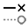

형상 변경하기
TecZone에는 형상을 변경, 정리 또는 추가 할 수있는 강력한 스케치 2D 편집기가 있습니다. 바로가기 키 S를 사용하여 스케치 모드로 들어갑니다. 편집기는 해당 파트를 전개 보기로 표시합니다.

전개도에서 조정 아이콘  을 클릭하거나 바로가기 키 S를 누릅니다.
을 클릭하거나 바로가기 키 S를 누릅니다.
전개도를 처리하기 위한 다양한 아이콘이 있는 메뉴가 열립니다:

스케치 패널
| 아이콘 | 기호 | 의미 |
|---|---|---|
|
선택 |
객채, 선, 항목 등 선택 |
|
선 |
라인 스케치 |
|
연결된 선 |
원하는 수의 라인 스케치 |
|
평행선 |
라인에 평행한 스케치 |
|
법선 |
곡선에 접선 스케치 |
|
절곡선 |
라인에 직선 스케치 |
|
중점 원호 |
벤딩선 스케치 |
|
2점 원호 |
중앙점, 시작점 및 끝점에서 호 스케치 |
|
3점 원호 |
정의된 두 점(시작점 및 끝점)을 통과하는 원호 스케치 |
접선 원호 |
스케치 요소에 접하는 호 스케치 |
|
|
직사각형 |
직사각형 스케치 |
|
중점 직사각형 |
중앙에서 직사각형 스케치 |
|
원 |
원 스케치. 원의 중심점을 선택하고 커서를 드래그하여 반경 정의 또는 반경 값 입력 |
|
2점 외접원 |
원주에 따라 원 스케치. 원주에서 한 점을 선택한 다음, 두 번째 점, 세 번째 점 선택. |
|
3점 외접원 |
원주에 따라 원 스케치. 원주에서 한 점을 선택한 다음, 두 번째 점, 세 번째 점 선택. |
|
2접선 원 |
두 개의 접선으로 원 스케치. 원 직경을 입력한 다음 첫 번째 접선, 이어서 두 번째 접선 선택. |
|
3접선 원 |
세 개의 접선으로 원 스케치. 원 직경을 입력한 다음 첫 번째 접선, 이어서 두 번째 및 세 번째 접선 선택. |
|
다각형 중점 - 코너점 |
세 개의 접선으로 원 스케치. 원 직경을 입력한 다음 첫 번째 접선, 이어서 두 번째 및 세 번째 접선 선택. |
|
다각형 중점 - 옆변 중앙 |
다각형 스케치. 변의 개수를 지정하고 중심점과 변 가장자리의 중앙 선택 |
|
옆변 포함 다각형 |
다각형 스케치. 변의 개수를 지정하고 한 변의 시작점과 끝점 정의. |
|
라운딩 |
입력된 반경으로 두 스케치 요소의 코너점에서 코너를 라운딩하면 접선 호가 생성됩니다 |
|
모따기 |
두 스케치 요소의 교차점 코너에서 모따기 생성 |
|
원형 코너트리밍 |
입력된 반경으로 두 스케치 요소의 교차점에서 코너 트리밍 |
|
각진 코너트리밍 |
직사각형으로 두 스케치 요소의 교차점에서 코너 트리밍. 직사각형의 치수는 미리 입력할 수 있습니다. |
|
사각 프리컷 |
직사각형 릴리즈 컷 생성. 코너 간격, 릴리즈 컷 깊이를 입력한 후 코너를 선택해야 합니다. |
|
긴구멍 프리컷 |
긴 홀 모양의 릴리즈 컷 생성. 코너 간격, 릴리즈 컷 폭과 깊이를 입력한 후 코너를 선택해야 합니다. |
|
삼각 프리컷 |
삼각형 릴리즈 컷 생성. 코너 간격, 릴리즈 컷 폭과 깊이를 입력한 후 코너를 선택해야 합니다. |
|
키홀 |
입력한 값으로 원 안에 키홀 생성. |
|
완전한 3세그먼트 라운딩 |
세 개의 연결된 스케치 요소 라운딩 |
|
엘리먼트 연장 |
확장할 스케치 요소 선택 |
|
엘리먼트 트리밍 |
트리밍할 스케치 요소 선택 |
|
병합 |
여러 개의 개별 폴리라인을 하나로 트리밍하고 결합하는 데 사용 |
|
엘리먼트 오프셋 |
한 개 이상의 스케치 요소, 스케치된 모델 가장자리 또는 모델 면을 지정된 간격만큼 오프셋 |
|
이동 |
ctrl을 사용하여 스케치 요소를 선택하고 기준점을 선택한 다음 스케치 요소를 이동합니다. |
|
회전 |
ctrl을 사용하여 스케치 요소를 선택하고 회전 중심점을 선택한 다음 스케치 요소를 회전할 시작점과 끝점 선택 |
축척 |
ctrl을 사용하여 스케치 요소를 선택하고 베이스 포인트를 선택한 다음 스케치 요소의 크기를 조정할 시작 기준점과 끝 기준점 선택 |
|
|
미러링 |
ctrl을 사용하여 스케치 요소를 선택한 다음 스케치 요소를 미러링할 미러 라인의 시작과 미러 라인의 끝 선택 |
|
선형 패턴 |
선형 패턴을 사용하면 하나 이상의 스케치 요소에 참조 복사본을 여러 개 만들 수 있으며, 이를 하나 또는 두 개의 선형 경로를 따라 동일한 간격으로 배치할 수 있습니다. 선형 패턴을 클릭하고 원하는 값 입력 |
|
원형 패턴 |
원형 패턴을 사용하면 하나 이상의 스케치 요소에 참조 복사본을 여러 개 만들 수 있으며, 이를 축을 중심으로 동일한 간격으로 배치할 수 있습니다. 원형 패턴을 클릭하고 원하는 값 입력 |
|
면 조합 |
두 개 이상의 닫힌 스케치 요소를 선택하여 표면을 서로 결합 |
|
절단면 |
두 개 이상의 닫힌 스케치 요소를 선택하여 선택한 요소의 절단 영역 생성 |
|
면 트리밍 |
두 개 이상의 닫힌 스케치 요소를 선택하여 표면 트리밍 |
|
프리컷 복사 |
이 툴을 통해 가장자리를 따라 노치의 복사본을 여러 개 만들 수 있습니다. 먼저 복사본 사이의 간격 및 만들고자 하는 노치의 복사본 수를 입력합니다. 그런 다음 노치에 인접한 두 라인 세그먼트를 클릭하여 노치를 선택합니다 |
|
프리컷 삭제 |
이 툴을 사용해 코너에 또는 라인 세그먼트를 따라 노치를 삭제할 수 있습니다. 노치에 인접한 두 라인 세그먼트를 클릭하면 노치가 삭제됩니다 |
|
프리컷 미러링 |
이 툴을 사용해 코너에 또는 라인 세그먼트를 따라 노치를 미러링할 수 있습니다. 노치에 인접한 두 라인 세그먼트를 클릭하면 노치가 미러링됩니다 |
|
스플라인 곡선 |
새 스플라인을 시작하려면, 시작점을 클릭하고 후속 점을 클릭하면 스플라인이 생성됩니다. 스플라인을 닫으려면, ALT 키를 누른 후 클릭합니다 |
|
프로파일 |
베이스 길이, 플랜지 높이, 두께, 플랜지 각도, 내측 반경을 입력하고 Enter를 눌러 프로파일을 생성합니다 |
|
텍스트 |
레이저 기계에서 파트에 마킹할 텍스트를 작도하는 데 사용됩니다. 이 툴 버튼을 클릭하면 입력 표시줄에 텍스트, 치수, 회전각도에 대한 입력 상자가 표시됩니다 |
|
텍스트 |
TrueType 폰트의 문자 형식을 가져와 폴리라인으로 변환하는 데 사용됩니다. 이후 레이저 툴링을 이 폴리라인에 적용하여 절단할 수 있습니다.이 버튼을 처음 클릭하면 폰트 대화상자가 나타나서 텍스트에 사용할 폰트르 선택할 수 있습니다 |
|
표준 형태 |
여러 가지 일반적인 모양을 만들어 도면에 삽입하는 데 사용됩니다. 이 버튼을 클릭하면 나열된 모양 만들기 대화상자가 나타나서 일반적인 모양 팔레트에서 선택할 수 있습니다. |
|
단순 치수 |
첫 번째 치수점을 선택한 다음 두 번째 치수점을 선택하고 치수 라인을 위치지정합니다 |
|
기준 치수 |
첫 번째 치수점을 선택한 다음 두 번째 치수점을 선택하고 치수 라인을 위치지정합니다 |
|
체인식 치수 |
첫 번째 치수점을 선택한 다음 두 번째 치수점을 선택하고, 치수 라인을 위치지정하고 다음 치수점을 선택합니다 |
|
수평 좌표치수 |
세로좌표 치수는 도면의 세로좌표 0에서 측정되는 치수 세트입니다. 기준점을 선택하고 치수를 위치지정합니다 |
 |
수직 좌표치수 |
세로좌표 치수는 도면의 세로좌표 0에서 측정되는 치수 세트입니다. 기준점을 선택하고 치수를 위치지정합니다 |
|
각도 치수 |
각도를 위한 치수를 생성합니다. 각도의 치수를 지정하려는 첫 번째 라인을 선택한 다음 두 번째 라인을 선택합니다 |
|
반경 치수 |
반경을 위한 치수를 생성합니다. 반경의 치수를 지정하려는 원을 선택합니다. ctrl을 사용해 직경 치수 지정 |
|
실선의 지시선을 갖는 반경 치수 |
반경을 위한 연속 리더로 치수를 생성합니다. 반경의 치수를 지정하려는 원을 선택합니다. ctrl을 사용해 직경 치수 지정 |
|
캡션 |
콜아웃 형태로 도면에 메모를 추가하는 데 사용됩니다. 콜아웃을 생성하려면 표시할 텍스트를 입력하고, 화살표가 가리킬 위치를 표시하기 위해 클릭하고, 텍스트를 배치할 위치를 표시하기 위해 다시 클릭합니다. |
|
세그먼트 치수 |
직선 및 곡선 세그먼트에 대한 치수를 추가하는 데 사용됩니다. 측정하려는 세그먼트를 클릭하고 치수 위치지정을 위해 다시 클릭합니다. 또는 를 누른 상태에서 자동으로 치수를 위치지정할 세그먼트를 클릭합니다. |